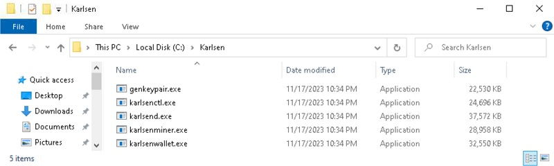
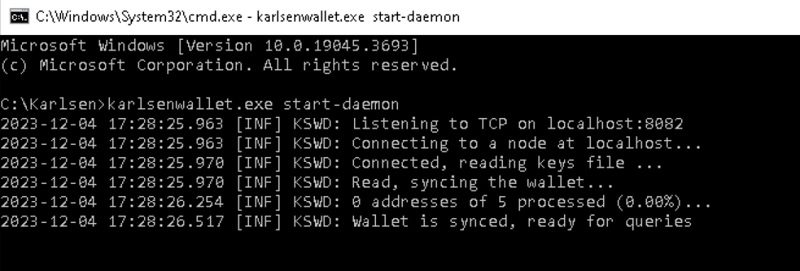
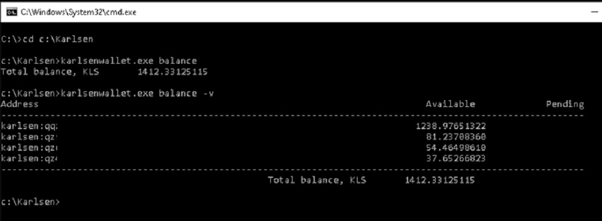

Quick Links
Karlsen WebsiteKarlsen Block Explorer
Setting up KLS wallet and obtaining an address
-
Download the client
Download the client from the project's Github page: https://github.com/karlsen-network/karlsend/releases -
Extract the downloaded files
Unzip the files and put them somewhere that you can easily find them. I just created a new dedicated directory, likeC:\Karlsen, and placed them all in there.

-
Run the node
In order to sync up to the blockchain to be able to see your balance and send coins, you will need to syncronize your node with the network.
Open up a command prompt (or powershell window) and change to the Karlsen directory (i.e.cd C:\Karlsen).
Type in the command:karlsend.exe --utxoindex
This will start the node and sync it to the blockchain. Note that it may take some time to fully sync up with the network.
-
Start the wallet daemon
Open up a new command prompt, or powershell window (leave the previous window open), and change to the Karlsen directory (i.e.cd C:\Karlsen).
Type in the command:karlsenwallet.exe start-daemon
This will start the wallet daemon in order for you to execute the next steps.

Note: Leave this window open and leave running in the background as well. -
Create a new wallet
Type in the command:karlsenwallet.exe create
This will create a new wallet keyfile. It will ask you to create a new password to secure the keyfile (wallet). Write the password down and keep it somewhere safe. -
Reveal and save your seed words
Type in the command:karlsenwallet.exe dump-unencrypted-data
This will display your newly created wallet's seed words. Write these down and keep them somewhere safe.
These words can be used to recreate your wallet in the event it becomes corrupted or inaccessible. Be careful as anyone who has these words can also recreate your wallet and gain access to your coins. -
Create a new receiving address
Type in the command:karlsenwallet.exe new-address
This will create a new wallet receiving address that you can send KLS coins to. -
Check balance
Type in the command:karlsenwallet.exe balance
This will display the balance of the address you created above.
Alternatively, type in the command:karlsenwallet.exe balance -v
The addition of the -v flag will display all addresses with a balance. This is useful to also display your wallet's change balances once you have made a few transactions.
 -
Send Coins
To send your coins to a different address (i.e an exchange or other wallet) be sure to have the correct address of the receipent.
Type in a command in the following format:karlsenwallet.exe send --send-amount xxx /t karlsen-address-you-are-sending-to
xxx is the amount of coins you wish to send, i.e. 200 and after the /t is the karlsen address you are sending to in the format of karlsen:qqrestofkarlsenaddress
Web wallet
The Karlsen team has now released a web wallet since the above instructions were first written to make it a bit easier on newcomers or people not comfortable using the cli wallet.The new web wallet can be found on the offical karlsen sebsite. Karlsen Web Wallet
Troubleshooting
The main issue people expeience is first syncing up the Karlsen node with the network. There are two solutions, the first is downloading a copy of the blockchain. While this option was useful at first the size of the blockchain is quickly making this option obsolete as it is hard to host a multi-gigabyte file.Check the Karlsen offical discord and in the USeful Links channel are links to the Datadir2 download.
The second solution is to add a known good peer to your node startup command.
karlsend.exe --utxoindex --addpeer x.x.x.x where x.x.x.x is the IP of a known good peer.You can check discord for any peer listings, as right now an offical list in non-existent.
Mining Software
The currently available GPU mining software include the following:
-
lolMiner 1.81 - https://github.com/Lolliedieb/lolMiner-releases/releases/tag/1.81 -
Rigel 1.11.0 - (Nvidia)https://github.com/rigelminer/rigel/releases/tag/1.11.0 -
SRBMiner-MULTI 2.4.3 - https://github.com/doktor83/SRBMiner-Multi/releases/tag/2.4.3